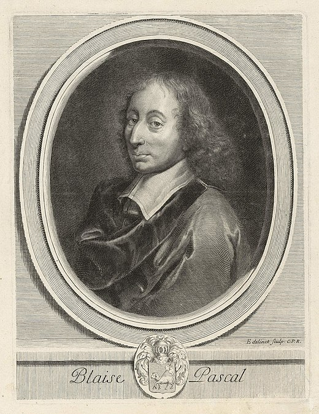
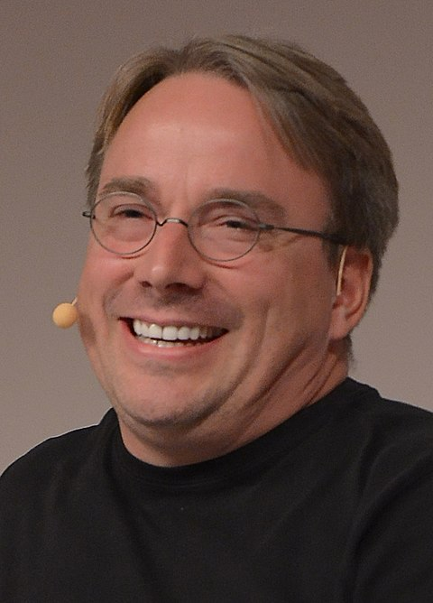
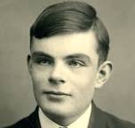

| Pénom |
Nom |
Image |
life story |
| Denis |
Ritchie |
 |
né le 9 septembre 1941 à Bronxville dans l'État de New York et retrouvé mort le 12 octobre 20111 à Berkeley Heights dans le New Jersey, est un des pionniers de l'informatique moderne, inventeur du langage C et codéveloppeur de Unix. Il est parfois désigné par dmr, son adresse électronique aux Laboratoires Bell. |
| Blaise |
Pascal |
 |
Blaise Pascal, né le 19 juin 1623 à Clermont (devenue Clermont-Ferrand) en Auvergne et mort le 19 août 1662 à Paris, est un polymathe : mathématicien, physicien, inventeur, philosophe, moraliste et théologien français.
Enfant précoce, il est éduqué par son père. Les premiers travaux de Pascal concernent les sciences naturelles et appliquées. Il contribue de manière importante à l’étude des fluides et clarifie les concepts de pression et de vide en étendant le travail de Torricelli. Il est l'auteur de textes importants sur la méthode scientifique. |
| Linus |
Tordwald |
 |
Linus Benedict Torvalds, né le 28 décembre 1969 à Helsinki en Finlande, est un informaticien américano-finlandais2,3 connu notamment pour avoir créé le noyau Linux en 1991 (à 21 ans).
Il continue d'en diriger le développement, étant considéré comme le « dictateur bienveillant à vie » (Benevolent Dictator for Life) de celui-ci. Il a également créé le logiciel de gestion de versions décentralisée Git et le logiciel d'enregistrement et de planification des plongées Subsurface.
En 2012, il reçoit le prix Millennium Technology, décerné par la Technology Academy Finland (en) pour son travail sur Linux. Il est également lauréat en 2014 du Computer Pioneer Award, décerné par l'IEEE Computer Society. |
| Alan |
Turing |
 |
Alan Mathison Turing, né le 23 juin 1912 à Londres et mort le 7 juin 1954 à Wilmslow, est un mathématicien et cryptologue britannique, auteur de travaux qui fondent scientifiquement l'informatique. Il est aussi un des pionniers de l'Intelligence artificielle. Pour résoudre le problème fondamental de la décidabilité en arithmétique, il présente en 1936 une expérience de pensée que l'on nommera ensuite machine de Turing et des concepts de programme et de programmation, qui prendront tout leur sens avec la diffusion des ordinateurs, dans la seconde moitié du xxe siècle. Son modèle a contribué à établir la thèse de Church, qui définit le concept mathématique intuitif de fonction calculable. |